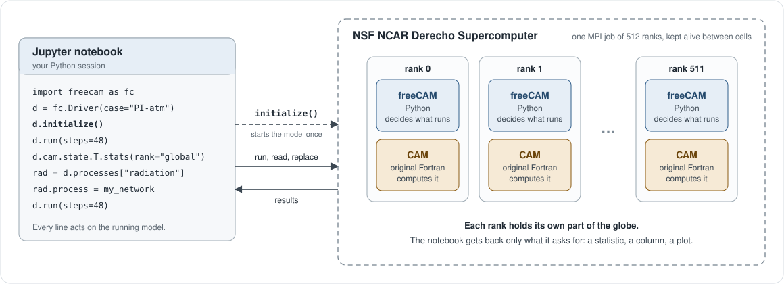
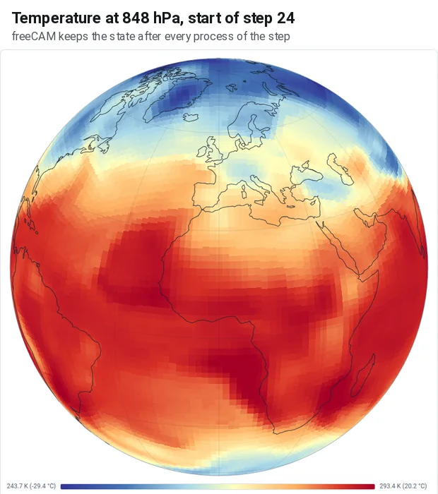
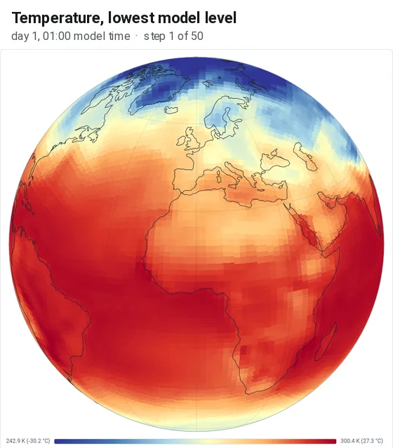
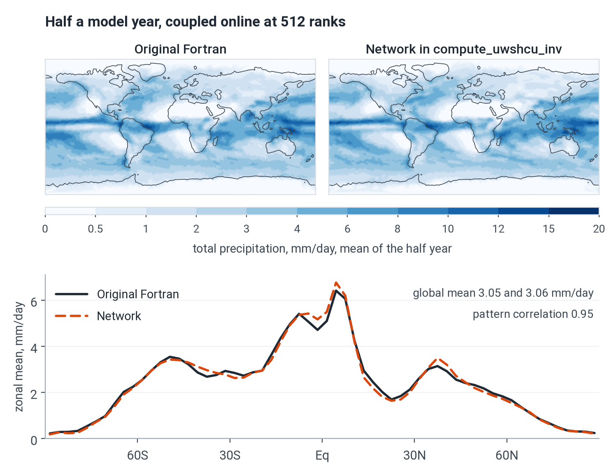

Run the CAM Freely
CAM is the atmosphere component of the Community Earth System Model (CESM). However, its current workflow requires the model to be compiled into a Fortran executable and then submitted and queued on an HPC system. As a result, changing which process runs, or what computes it, requires editing the model, rebuilding it, and resubmitting it. Further, the entire case preparation process follows a Fortran style that is difficult to use. These limit the efficiency of scientific exploration.
To this end, we developed freeCAM, which drives the CAM atmosphere component from a Jupyter notebook. It supports deciding which process runs next and freely replacing a whole process or a single kernel with numerical code written in Python or a trained ML model, without stopping the running simulation.
Driving CAM from a Jupyter notebook
Figure 1 shows how a Jupyter notebook drives freeCAM on the NSF NCAR Derecho Supercomputer. Below the figure, we explain the notebook code line by line.


initialize() and then sends it commands. On every rank, freeCAM (Python) decides what runs, and CAM (the original Fortran) computes it.import freecam as fcImports freeCAM.
d = fc.Driver(case="PI-atm")Creates a driver for the
PI-atmcase, i.e., the preindustrial atmosphere with the CESM land, sea ice, data ocean, and river components coupled online.d.initialize()Submits one job of 512 MPI ranks to Derecho and waits for every rank to connect. Every later cell reuses this job rather than submitting a new one.
d.run(steps=48)Advances the model by 48 steps, i.e., one model day.
d.cam.state.T.stats(rank="global")Computes the statistics of temperature over all 512 ranks and sends them back to the notebook.
rad = d.processes["radiation"]Looks up the radiation process of this run.
rad.process = my_networkPuts
my_network, e.g., a trained ML model, in place of the whole radiation process. The simulation is not rebuilt and the job is not resubmitted.d.run(steps=48)Runs one more model day, in which
my_networkcomputes radiation and every other process still runs in the original Fortran.
Besides Jupyter notebooks, freeCAM can also be driven ➊ from a Python script, ➋ as a PBS batch job, or ➌ from the Workflow Builder, a browser page we developed to edit, run, and watch the model. All of them reach the same Python control layer. Readers can refer to the Manual for how to use the Workflow Builder.
Bit-for-bit with the original
freeCAM with nothing replaced reproduces the original CESM bit for bit. We compare the five-year simulation of freeCAM with that of the original CESM. All 215 variables and 884 files written by the coupled run are identical, with no numerical tolerance. Figures 2 to 4 exemplify the state of a freeCAM run with different settings.



Close to the original with a trained network
We replaced the shallow-convection kernel, compute_uwshcu_inv, with a trained network inside the coupled model. The network runs on A100 GPUs, with land, sea ice, ocean, and rivers running live on CPU. As shown in Figure 5, its mean precipitation preserves the spatial pattern of the original (correlation 0.95) and its global mean (3.05 and 3.06 mm/day). That said, the network run produced 2.7% more low cloud and 5% more cloud liquid water. On CPU, the half year took 1.19 times as long as the original Fortran.
import freecam as fc
d = fc.Driver(case="PI-atm")
d.initialize()
shallow = d.processes["shallow_convection"]
net = fc.NativeModel("uwshcu.pt")
shallow.kernels["compute_uwshcu_inv"] = net
d.run(steps=8688) # half a model year

compute_uwshcu_inv, together with their zonal means.Readers can refer to the following pages for the accuracy, cost, and GPU details of this experiment.